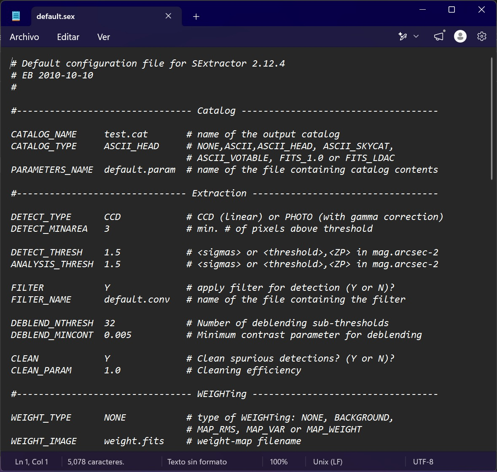

-
default.sexes el corazón de SExtractor. Contiene los parámetros globales del análisis; aquí se define el nivel de detección, el nombre del catálogo de salida y otros parámetros importantes. -
default.paramcontiene la lista de parámetros que SExtractor medirá durante el análisis. SExtractor posee muchas propiedades observacionales disponibles. -
default.convcontiene el filtro de convolución utilizado para mejorar la detección de objetos. -
default.nnwcorresponde al archivo de red neuronal utilizado para la clasificación estrella-galaxia.

default.sex, aquí se definen los parámetros globales del análisis.

default.param, aquí se definen los parámetros que SExtractor medirá.